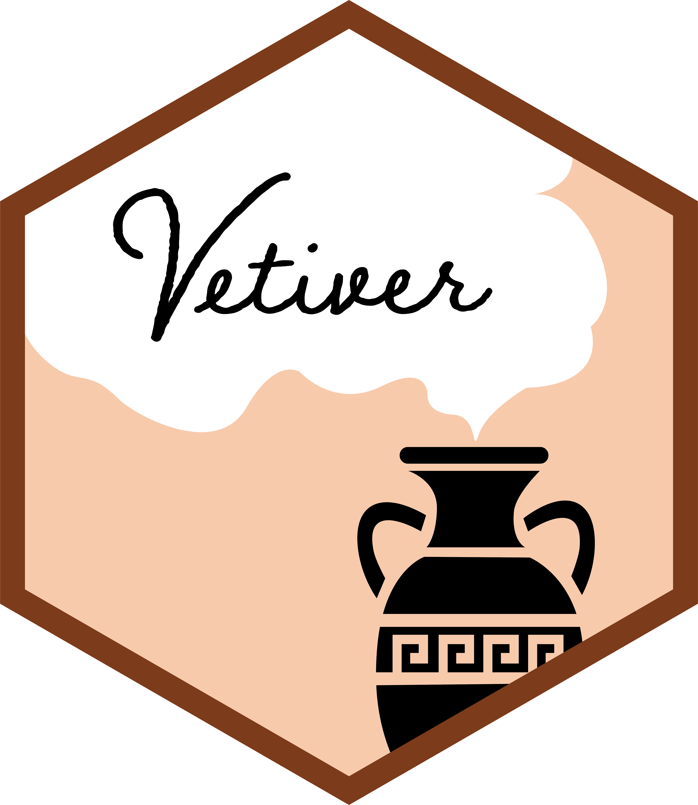
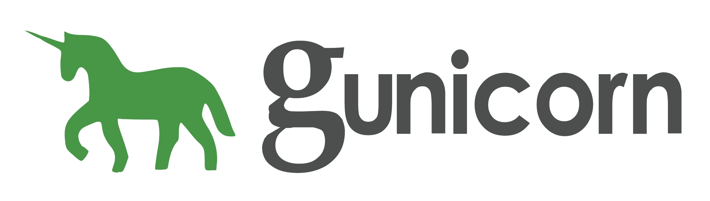
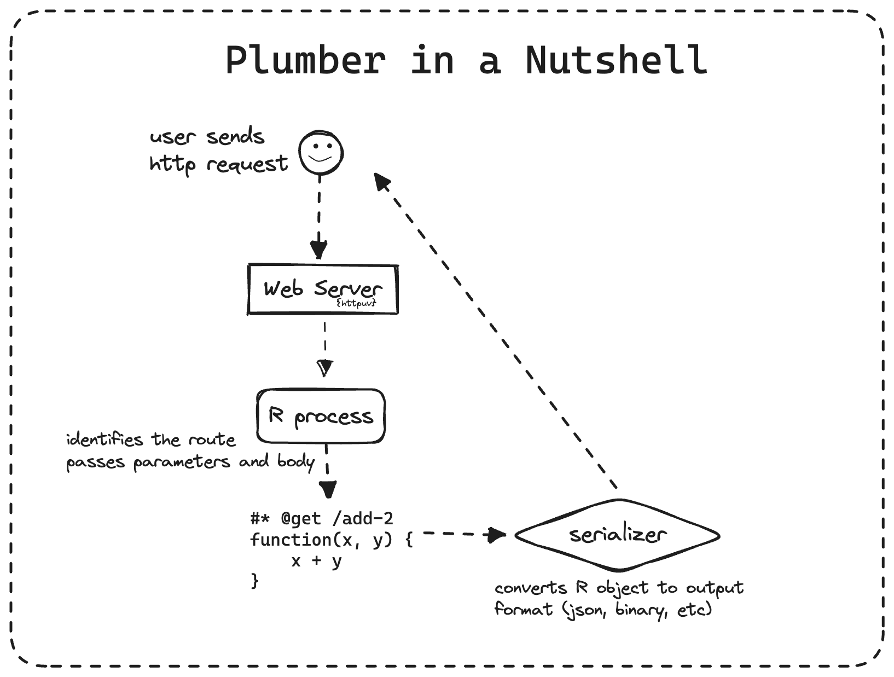
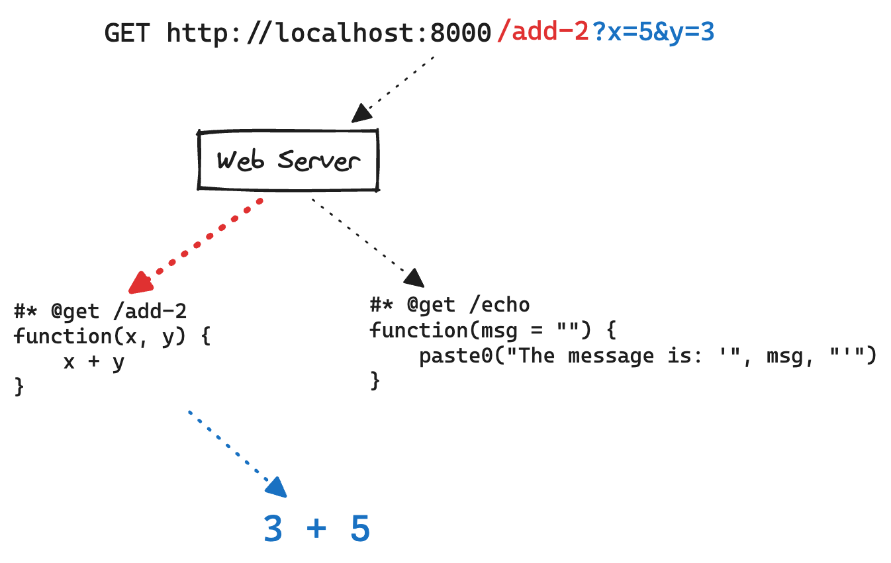
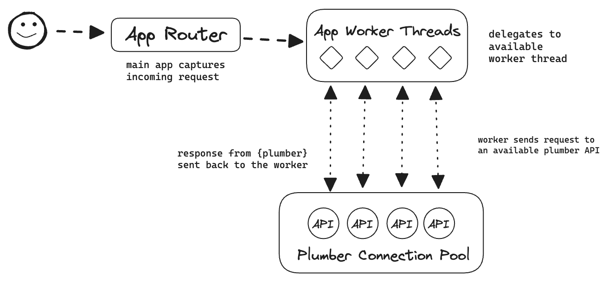
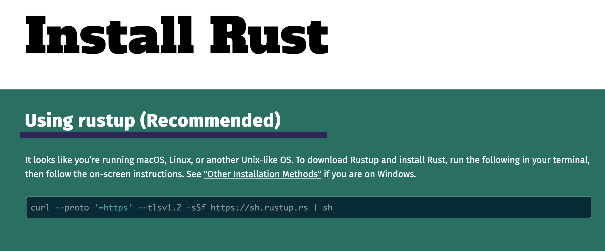

Valve: putting R in production
This blog post is based on my most recent YouTube video. Please give it a watch!
I’ve been grinding on a new tool for a few months now. And I’m hyped to formally introduce you to it. It’s called Valve And Valve is going to make R in production kick a$$.🔥
We’ve all seen those click bait articles saying “Don’t Put R in production” or telling you that R can’t make machine learning models for production. Those “hot takes” are uninformed and can be applied to other languages such as Python. That’s a bunch of malarkey.
Let’s get right down to it. Let’s talk “production.” And let me be clear: R belongs in production. But we as the R community need to learn how to do that and be better advocates.
When I say “production” I’m talking about making your code work with any other system. And that’s where RESTful APIs come in. If I’ve lost you at “RESTful”, watch my previous video here.
REST relies on HTTP, which is the foundation of the internet and is a common tongue. It’s like if Esperanto actually worked. REST APIs provide a language-agnostic way to expose functionality over the web.
Plumber is an R package that converts your R functions into a RESTful API meaning any tool that can communicate in HTTP can call your R functions. It converts R code like this into an http endpoint.
At it’s core Valve is a web server that runs multiple {plumber} APIs in parallel. Valve spins up and down plumber APIs as needed.

It’s designed to work with any existing plumber API. And because of that it supports {vetiver} out of the box.

Vetiver is a framework built by Julia Silge and Isabel Zimmerman from Posit that simplifies putting machine learning models built with tidymodels into a production setting. And since, the goal is R in production, Valve can be easily integrated into Docker containers and deployed with DigitalOcean, AWS, Azure, or whatever other orchestration tools you have available.
Valve is akin to Gunicorn for Flask apps and FastAPI.


To understand why Valve is so powerful, we need to first understand how plumber works and its limitations. Plumber works by writing a function definition and providing annotations using a special comment character #*. Let’s take a look at a very simple example.
The three main components of a plumber API are:
- the function definition
- the request type
@post - endpoint
/add-2
In a nutshell plumber works by spawning a single web server using the {httpuv} R package. The webserver captures incoming http requests, captures the provided parameters, body, and requested endpoint. Based on the endpoint, it passes the parameters to the function. The result is then “serialized” into the correct output type. By default, this is json.

For example, we might be calling the /add-2 endpoint. The process looks a bit like this. We have a GET request. The endpoint is colored red. Then the parameters are colored blue. The request is captured by the web-server. The endpoints are checked. Then the parameters are passed to the function and the user gets the result.

You can see how this is powerful! But there is one major thing holding this back. This is all running in a single R process. R, like Python, is single threaded. That means each request that comes in has to be added to a queue. The next request cannot be processed until the previous one has been.
Valve helps by running multiple plumber APIs concurrently. Valve is built specifically for plumber, in Rust, and by leveraging the power Tokio framework. Instead of having a single plumber API and a single R process handling all requests, there is another web server handling all incoming requests. This web server is build using Tokio.


The app has a number of pre-specified worker threads. Each worker is capable of taking an incoming request, processing it, and returning a response. These worker threads will delegate the request to another plumber API. These plumber APIs are sitting in a connection pool waiting to be accessed. The APIs will spawn and de-spawn according to the amount of incoming traffic.

What this means is that instead of being able to handle 1 request at a time, we can handle as many requests as there are workers concurrently. This allows us to take advantage of more than a single R process at a time and, as a result, we can utilize more of the compute resources available to us.
So how do you install Valve? There are two ways in which you can install Valve. The first is to use the Rust package manager Cargo. This is my personal recommendation. If you don’t have Rust and cargo installed, don’t worry it is the second easiest language I’ve ever installed.

Follow this one liner and it’ll handle the installation for you.
To install Valve with cargo run
cargo install valve-rs --no-default-featuresDoing this will install the Valve binary and make it available to you as a command line tool. Alternatively, if you want to install valve as an R package you can do so via the R-universe. The R-universe version has pre-built binaries for Windows, Mac, and Ubuntu which means you do not need to have rust installed. But again, its easy, so give it a shot!
install.packages(
"valve",
repos = c("https://josiahparry.r-universe.dev", "https://cloud.r-project.org")
)To follow along with the rest of these demos you can check out code in the github repository.
Here I want to demo just how easy it is to use Valve and what the experience is like. For this simple example we will run a plumber API with one endpoint /zzz which will sleep for a specified amount of time. We’ll create a Valve app with 10 workers and plumber APIs.
valve -n 10 -w 10You’ll notice that only one API is spawned at the start. This is because connections are spawned based on incoming demand. As we send more requests, the plumber APIs will spawn. If, after a specified amount of time, they go stale, they will de-spawn. However, you do have the ability to control the minimum number of plumber APIs.
Valve starting at: 127.0.0.1:3000
Spawning plumber API at 127.0.0.1:11094We’re going to create a simple function sleep() which will call the zzz endpoint at a specified port for a specified amount of time. We’ll use furrr to create 10 sessions and call the function 10 times on valve app.
sleep <- function(port, secs) {
httr2::request(
paste0("127.0.0.1:", port, "/sleep?zzz=", secs)
) |>
httr2::req_perform() |>
httr2::resp_body_string()
}Now with the function defined we can use furrr to run the function in parallel
We will call the function 10 times using future_map() . The first time this runs we can see that more plumber APIs are being spawned. This takes somewhere between 3 and 4 seconds the first time we run it.
start <- Sys.time()
furrr::future_map(1:10, ~ sleep(3000, 2))
multi_total <- Sys.time() - start
multi_total
#> Time difference of 3.653488 secsIf you watch your terminal, you will see additional plumber connections being spawned.
Valve starting at: 127.0.0.1:3000
Spawning plumber API at 127.0.0.1:11094
Spawning plumber API at 127.0.0.1:35714
Spawning plumber API at 127.0.0.1:15674
Spawning plumber API at 127.0.0.1:30746
Spawning plumber API at 127.0.0.1:26860
Spawning plumber API at 127.0.0.1:54939
Spawning plumber API at 127.0.0.1:5592
Spawning plumber API at 127.0.0.1:46549
Spawning plumber API at 127.0.0.1:53346
Spawning plumber API at 127.0.0.1:44956If we run this again, we get something much closer to two seconds total for sending all 10 requests.
start <- Sys.time()
furrr::future_map(1:10, ~ sleep(3000, 2))
multi_total <- Sys.time() - start
multi_total
#> Time difference of 2.013385 secsNow, we can do the same thing with all 10 workers calling just one of the spawned plumber APIs.
start <- Sys.time()
furrr::future_map(1:10, ~ sleep(24817, 2))
(total <- Sys.time() - start)
#> Time difference of 20.04956 secsThat’s a huge different. That is a lot more performance that we are squeezing out of this plumber API by creating multiple to run concurrently.
In an R session load {valve}.
Next, we will use the function valve_run() to run our plumber API. This function has a lot of handy defaults to moderately scale your plumber API. By default it looks for the file plumber.R in your working directory.
valve_run("plumber.R", n_max = 10)
#> Valve app hosted at <http://127.0.0.1:3000>
#> Spawning plumber API at 127.0.0.1:49015The CLI works just like the R function with two differences. We call it from the command line and the syntax is a smidgen different.
From the command line we can run valve –help to see the arguments that we can provide. The CLI has the same defaults as the R package.
valve --help
Usage: valve [-h <host>] [-p <port>] [-n <n-max>] [-w <workers>] [-f <file>] [--check-unused <check-unused>] [--max-age <max-age>] [--n-min <n-min>]
Distribute your plumber API in parallel.
Options:
-h, --host host to serve APIs on
-p, --port the port to serve the main application on
-n, --n-max the maximum number of plumber APIs to spawn
-w, --workers number of Tokio workers to spawn to handle requests
-f, --file path to the plumber API (default `plumber.R`)
--check-unused default 10. Interval in seconds when to check for unused
connections
--max-age default 5 mins. How long an API can go unused before being
killed in seconds.
--n-min the maximum number of plumber APIs to spawn
--help display usage informationNow I want to illustrate scaling a machine learning model with {vetiver} and valve. They do so by wrapping the model into a plumber API. I’ve created a sample plumber API based on Julia’s recent Tidy Tuesday screencast in which she creates an XGBoost model.

I’ve taken this example and used vetiver to create a plumber API to serve predictions from this model. One could deploy this API as is with Docker or something like Posit Connect. If going down the Docker approach, we can make this a bit more performant by using Valve.
The scripts to generate the vetiver model and API are in the Github repo.
To make this into a Valve app all we need to do is pass provide the plumber API file to valve and we’re on our way! I’ve written some simple bench marks using drill to compare the performance of the two approaches. With valve we will use 5 concurrent processes and test it.
valve -f vetiver-api.R -n 5 -w 5